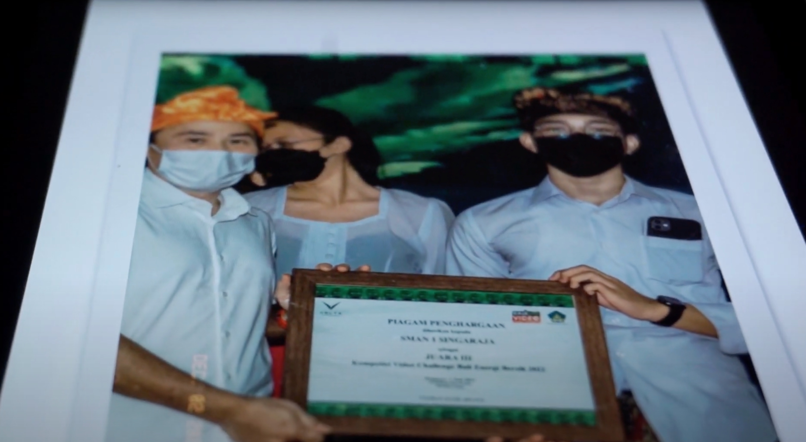
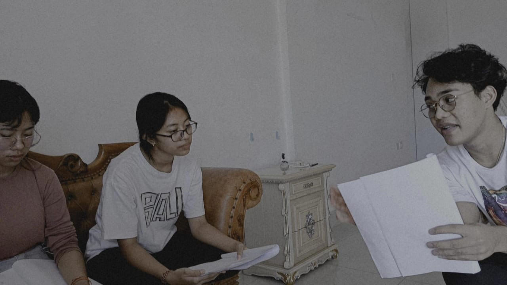
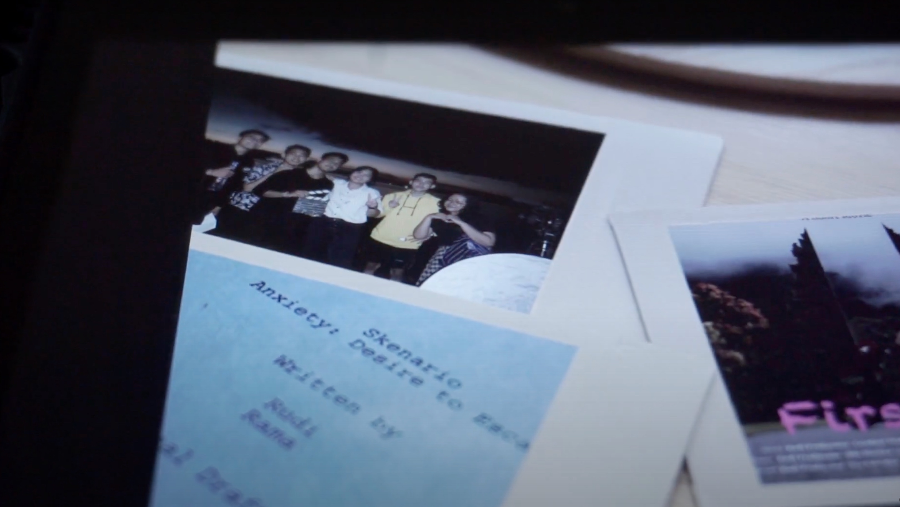
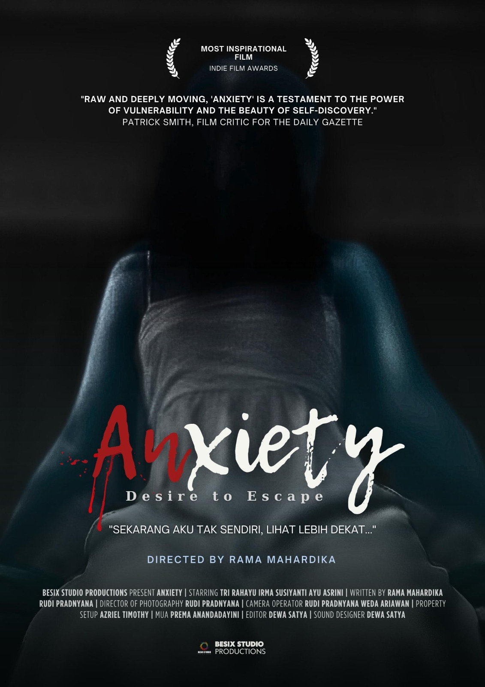
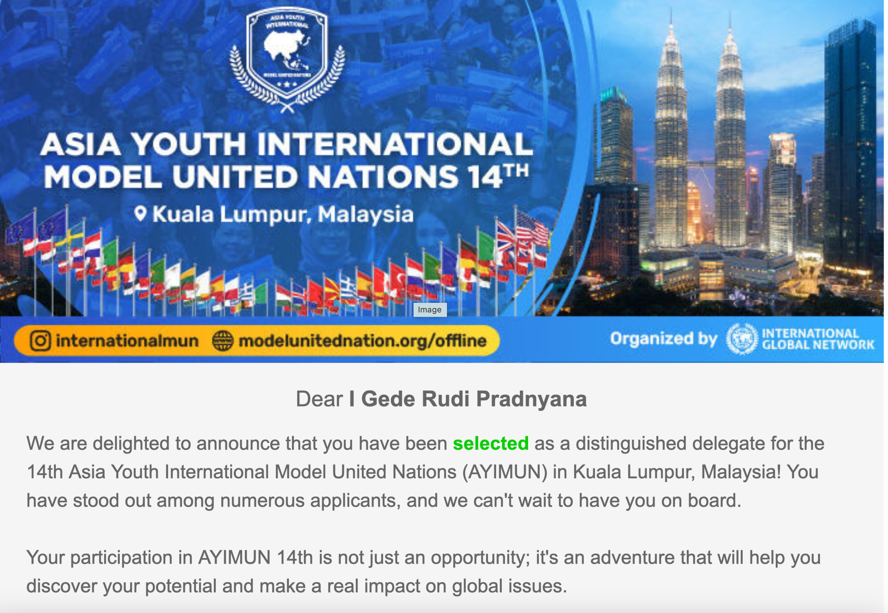
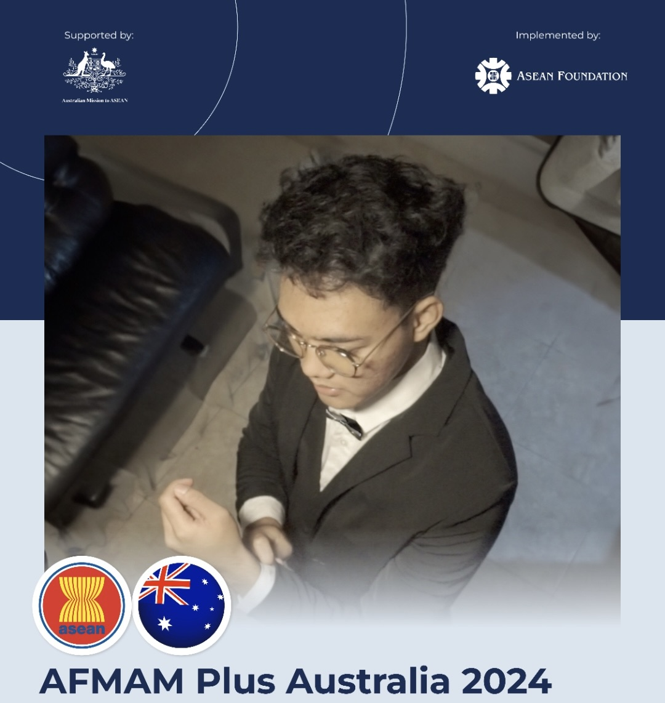

Currently, I live in Jakarta for my studies, and I also work as a freelance video editor and creative director for several production houses in Jakarta. My cousin and I also run a gig on Fiverr, which is now based and managed in Adelaide, Australia.
Achivements, Works And Behind The Scenes

I recieved an award from Bali's goverment

Behind the scene on the filming locationthis is my editing timeline, i also take a part on post production

the screenplay that i wrote

And the latest film that i've created and directed by my friend, the film won the 1st place on jogja film competition
Not just on creative industries, but I also participate in several cultural exchange programs and United Nations conferences
After movie of Asia Youth International Model United Nations

damnn i was selected as a delegate from indonesia on Asia Youth International Model United Nations

i also take a part on AFMAM plus Australia which was held by Asean foundation early this december